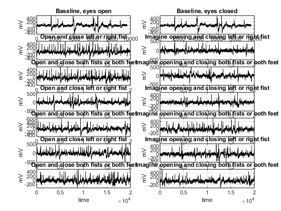
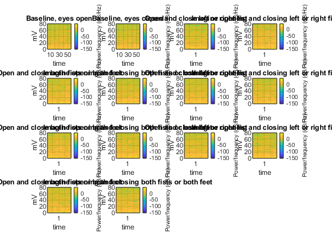
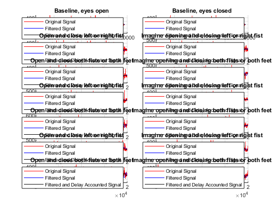

Contents
Define Experiments and Files
Task 1: Baseline, eyes open Task 2: Baseline, eyes closed Task 3: open and close left or right fist Task 4: imagine opening and closing left or right fist Task 5: open and close both fists or both feet Task 6: imagine opening and closing both fists or both feet
experiments = ["Baseline, eyes open" "Baseline, eyes closed" "Open and close left or right fist" "Imagine opening and closing left or right fist" "Open and close both fists or both feet" "Imagine opening and closing both fists or both feet" "Open and close left or right fist" "Imagine opening and closing left or right fist" "Open and close both fists or both feet" "Imagine opening and closing both fists or both feet" "Open and close left or right fist" "Imagine opening and closing left or right fist" "Open and close both fists or both feet" "Imagine opening and closing both fists or both feet"]; % Experiments run: % S001R01: Task 1 % S001R02: Task 2 % S001R03: Task 3 % S001R04: Task 4 % S001R05: Task 5 % S001R06: Task 6 % S001R07: Task 3 % S001R08: Task 4 % S001R09: Task 5 % S001R10: Task 6 % S001R11: Task 3 % S001R12: Task 4 % S001R13: Task 5 % S001R14: Task 6 files = ["S001R01.edf" "S001R01.edf" "S001R03.edf" "S001R04.edf" "S001R05.edf" "S001R06.edf" "S001R07.edf" "S001R08.edf" "S001R09.edf" "S001R10.edf" "S001R11.edf" "S001R12.edf" "S001R13.edf" "S001R14.edf"];
Read .edfs and extract Fpz_ values
for x = 1:14 % Read .edfs file_name = files(1,x); variable_name = sprintf('task%d', x); eval([variable_name, ' = edfread(file_name);']); % Extract the 'Fpz_' data and assign it to 'taskX_fpz' eval([variable_name, '_fpz = vertcat(', variable_name, '.Fpz_{:});']); % Clear the dummy variables clear file_name clear variable_name clear x end Fs = 160;
Plot all signals
figure; hold on; for x = 1:14 subplot(7, 2, x); plot(eval(['task', num2str(x), '_fpz']), 'k'); title(experiments(1,x)); xlabel("time"); ylabel("mV"); grid on; end
Plot spectograms
figure; hold on; for x = 1:14 subplot(4, 4, x); spectrogram(eval(['task', num2str(x), '_fpz']),[],[],[],Fs,'yaxis'); title(experiments(1,x)); xlabel("time"); ylabel("mV"); grid on; end
Design low pass filter and filter all signals
digFilt = designfilt('lowpassiir','PassbandFrequency',0.5,'StopbandFrequency',4,'PassbandRipple',1,'StopbandAttenuation',60,'SampleRate',500); for x = 1:14 variable_name = sprintf('task%d_fpz_filtered', x); eval([variable_name, ' = filter(digFilt, task', num2str(x), '_fpz);']); end
%% Plotting the delay of the lowpass filter grpdelay(digFilt,500,Fs)
Compensating for the delay
for x = 1:14 variable_name = sprintf('task%d_fpz_delayCompensated', x); eval([variable_name, ' = filtfilt(digFilt, task', num2str(x), '_fpz);']); end
Plotting the differences between original, filtered, and delay compensated signals
figure; for x = 1:14 subplot(7, 2, x); hold on; % Plot the original signal in red plot(eval(['task', num2str(x), '_fpz']), 'r'); % Plot the filtered signal in blue plot(eval(['task', num2str(x), '_fpz_filtered']), 'b'); % Plot the filtered and delay-compensated signal in black plot(eval(['task', num2str(x), '_fpz_delayCompensated']), 'k'); title(experiments(1,x)); legend('Original Signal', 'Filtered Signal', 'Filtered and Delay Accounted Signal'); grid on; hold off; end
Plotting the peaks
figure; for x = 1:14 subplot(7, 2, x); findpeaks(eval(['task', num2str(x), '_fpz_delayCompensated']), Fs); title(['Vertical Component - ', experiments(1,x)]); xlabel('Time (sec)'); ylabel('Amplitude'); end